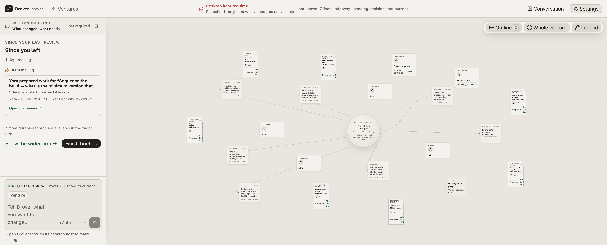
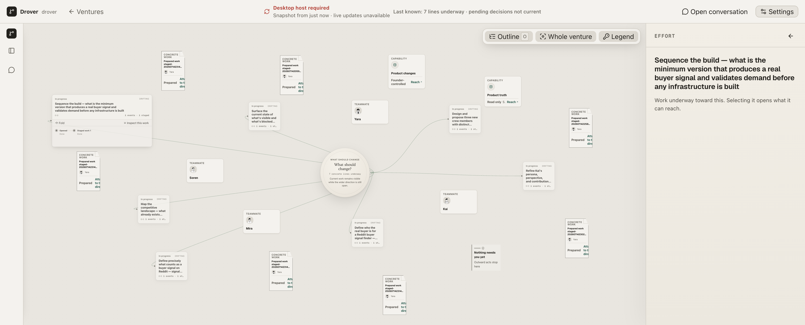
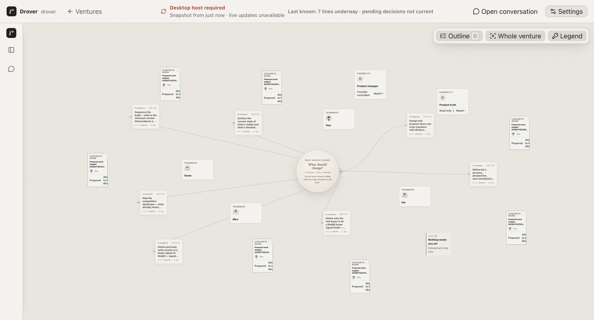
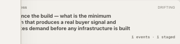

Drover · ADE overnight run · morning briefing
Overnight, the run rebuilt Drover's frame — the docked shell of conversation rail, canvas
stage, and one swapping inspector — and replaced the hand-placed node layout with an engine
that keeps cards from ever colliding. That structural work holds and every test is green.
But the surface it produced does not yet look like the approved composite: internal
words the founder should never see (DRIFTING, raw
staged-… IDs, "concrete lines") are printed all over the cards, a red
"Desktop host required" banner sits across the top, and a selected card runs off the edge of
the stage. Those are the next phase's job — so the chain stopped here, at the last honest
boundary, rather than papering the shell over cracked copy.
The verifier accepted the engineering of Phase 1 — grid shell, collision-free layout, all suites green — and rejected the render against the composite and the six-noun language contract. Both are true at once, and both are stated plainly below. No criterion is marked met that isn't.
Phase 1 — the shell + the layout engine
In plain terms: Drover now opens into one docked workbench instead of floating, overlapping panels. Your conversation lives in a rail on the left that collapses to a thin icon strip; the venture fills the center as the stage; and detail opens in a single panel on the right that swaps its contents instead of stacking new windows on top of each other. The cards on the canvas are now placed by an engine, not by hand — so no two of them sit on top of one another, at any window size. When you collapse the rail or open the inspector, the canvas re-fits to the space it has left.
ui/src/lib/atlasLayoutEngine.ts places every node; no two cards overlap at 1440 or 1920 in any shell config.atlasLayout.ts, atlasOrbitLayout.ts, and AtlasOrbitField.tsx are deleted; drag-to-place is gone.DRIFTING badges, CONCRETE WORK kickers, "7 concrete lines underway" — none are among the six nouns.Prepared work staged-202607142314… instead of what the draft actually is. Direct violation of §4 ("titles from content, never IDs").The clean read: the two acceptance criteria the run was most at risk on — no panel overlap, no node overlap — both hold. What failed is everything the eye lands on first, and almost all of it is Phase 2 work (language + component pass) that simply hasn't run yet. P1 built a correct skeleton wearing Phase-0 clothes.

DRIFTING
on the in-progress cards, CONCRETE WORK + staged-… titles on the
draft cards.
evidence/ade-run/P1/verify-final-resting-1920x1080.png



Every P1 frame — initial, canvas, both resolutions, rail states, inspector states — is in
docs/design/evidence/ade-run/P1/ (34 files). The four above are the load-bearing ones.
The contract's Phase 1 acceptance, line by line
Straight from the contract's Phase 1 acceptance list. Nothing green here is aspirational.
DRIFTING, staged-…, CONCRETE WORK, "concrete lines" are all visible. (Phase 2 scope, but a hard invariant, so it counts against the surface today.)
DRIFTING cannot be
called passed even mid-way through the room.
For you, in the morning
The Phase-1 code is in the working tree on branch ade, uncommitted
— the commit step only runs after a phase passes, and P1 didn't. So the app you'll run is the
P1 build sitting on top of a382f40. Phase 9 (the desktop app) never ran, so use
npm start and a browser, not npm run app.
You're already on ade. The P1 changes are unstaged edits — don't discard them. Check:
git branch --show-current # -> ade git status --short # -> ~30 modified/deleted ui + test files
If git status is clean, the work was lost — stop and investigate. It should show modified FirmApp.tsx, AtlasCanvas.tsx, a new ui/src/lib/atlasLayoutEngine.ts, and deleted atlasLayout.ts / atlasOrbitLayout.ts / AtlasOrbitField.tsx.
npm start
This builds the UI and serves the app. Wait for:
Drover running at http://127.0.0.1:4317
Open http://127.0.0.1:4317 in a desktop browser at 1920×1080 (the primary judging size). You'll land in the drover venture.
You're looking for two things at once: does the structure feel like one solid room (it should), and does the surface embarrass it (it will — that's the failed verdict, live).
Prepared work staged-2026… — a raw ID, not a title. In-progress cards carry a DRIFTING tag and a CONCRETE WORK kicker. The hub says "7 concrete lines underway." These are exactly the words the founder should never see. That's Phase 2's whole job.Want the automated proof instead of the manual tour? npm test runs everything (brain + 250 UI unit tests + lint + build); npm run test:firm:browser runs the desktop journey. Both were green at the end of the run.
For your review
Choices made without you in the room. Each is reversible; each is flagged so you can overrule it.
d3-force, not elkjs. The contract framed this as a Phase-1 spike between the two (or both). The run added only d3-force (force-directed constellation) and skipped elkjs (layered left-to-right). That's a real fork in how the atlas reads — organic clustering vs. structured columns — and it was decided by the builder, not you. Worth a look before Phase 2 hardens around it.
ade. That's correct behavior — but it means the P1 build is one git checkout away from being lost. Decide whether to stash or WIP-commit it before Phase 2 starts.
Honest state of the chain
The run stopped at Phase 1 — the first of nine. Phases 2 through 9 (language + components, zoom-responsive rendering, routing + review-dialogue + trust, streaming + steering, evidence-to-cause, first-run, one-crew, Electron packaging) never started.
This is the run contract working as designed, not a crash. The rule is: a shipped Phase N
with npm test green beats a half-done Phase N+1. P1's engineering is
green, but its render didn't clear the verifier's bar against the composite. Rather
than proceed on a cracked surface — or fake the verdict — the chain halted at the last honest
boundary and wrote this.
The most useful next move is narrow and clear: run Phase 2 (the language + component pass) and let it absorb the four visible P1 defects — retitle drafts from content, kill the leaked nouns, dress the cards to the composite, and remove the degraded banner — plus fix the right-edge clip and add the 1280 / 2560 screenshots. Phase 2 was always where the surface gets its clothes; the P1 skeleton is a correct thing to hang them on. Nothing structural needs redoing.
Git · branch ade
The tip of ade is still the specs commit. The P1 code lives above it as uncommitted
working-tree changes (~30 files). Everything below a382f40 is inherited from
main.
No commit was authored by the run — the commit agent gates on a passing phase, and none passed.
The stash stranger-changes-before-ade-run was left untouched per the run contract.
Drover ADE overnight run · Night 1 of 2 · attempted P1 only
Ground truth: docs/design/ade-build-contract.md · ux-divergence-2026.html · ade-design-system.html · ade-frame-round2/composite.html
Evidence: docs/design/evidence/ade-run/P1/ (34 screenshots) · this briefing: docs/design/ade-morning-briefing.html
Written to be read cold, outside the session that produced it.